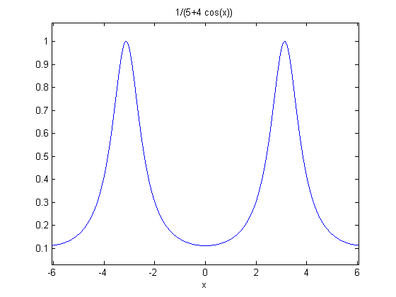
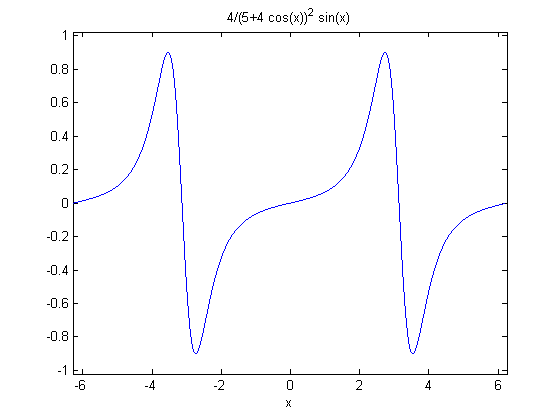
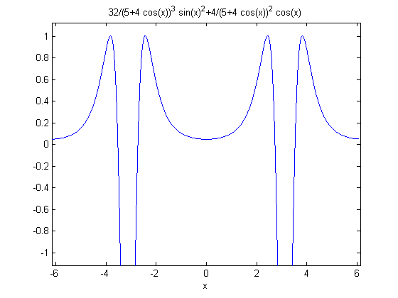
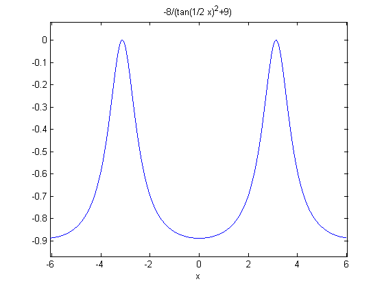
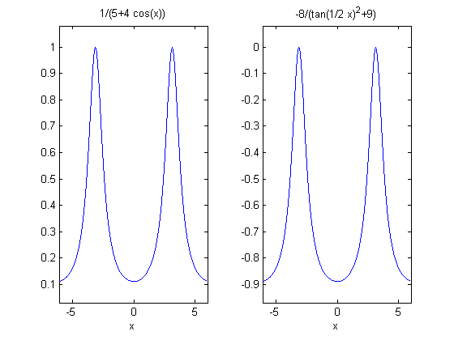
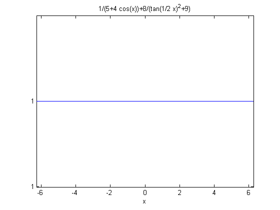
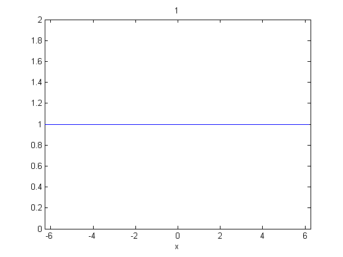

A Simple Calculus Example
This demo shows how to use the Symbolic Math Toolbox with a simple example from calculus.
Copyright 1984-2002 The MathWorks, Inc. $Revision: 1.10 $ $Date: 2002/03/31 23:38:47 $
To manipulate a symbolic variable, create an object of type SYM.
x = sym('x')x = x
Once a symbolic variable is defined, you can use it to build functions. EZPLOT makes it easy to plot symbolic expressions.
f = 1/(5+4*cos(x)) ezplot(f)
f = 1/(5+4*cos(x))
Many functions can work with symbolic variables. For example, DIFF differentiates a function.
f1 = diff(f) ezplot(f1)
f1 = 4/(5+4*cos(x))^2*sin(x)
DIFF can also find the Nth derivative. Here is the second derivative.
f2 = diff(f,2) ezplot(f2)
f2 = 32/(5+4*cos(x))^3*sin(x)^2+4/(5+4*cos(x))^2*cos(x)
INT integrates functions of symbolic variables. The following is an attempt to retrieve the original function by integrating the second derivative twice.
g = int(int(f2)) ezplot(g)
g = -8/(tan(1/2*x)^2+9)
At first glance, the plots for f and g look the same. Look carefully, however, at their formulas and their ranges on the y-axis.
subplot(1,2,1) ezplot(f) subplot(1,2,2) ezplot(g)
e is the difference between f and g. It has a complicated formula, but its graph looks like a constant.
e = f - g subplot(1,1,1) ezplot(e)
e = 1/(5+4*cos(x))+8/(tan(1/2*x)^2+9)
To show that the difference really is a constant, simplify the equation. This comfirms that the difference between them really is a constant.
e = simple(e) ezplot(e)
e = 1